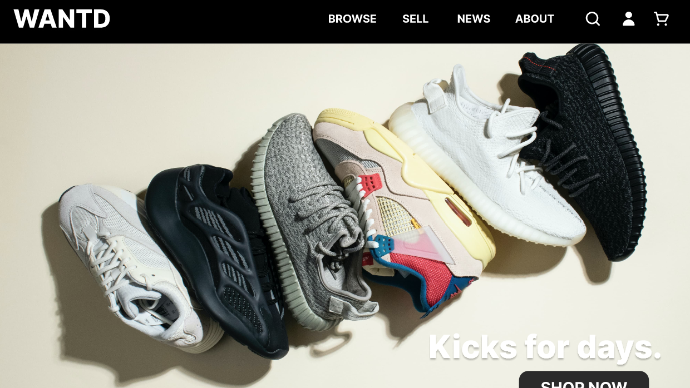

Home
Code
Animation
Art
UI/UX
Music
waving_hand
Hi, I'm [redacted]!
I'm a junior at Brown University studying computer science and visual art. I'm interested in areas of computer science that intersect with the arts, such as animation, game development and design, frontend development, and UI/UX design.
Resume
Below, you can find some of my projects related to UI/UX design!
Projects
Exotic Fruits
A responsive redesign of the homepage website for Exotic Fruits, an India-based fruit export company.
Cheesy Dreams Creamery
A simple cheese shopping site where users can filter or sort by various criteria and add items to their cart.

WANTD
A website design for WANTD, a sneakers buying and reselling platform.
Personas
An analysis of a refrigerator user interface and the user personas who interact with it.